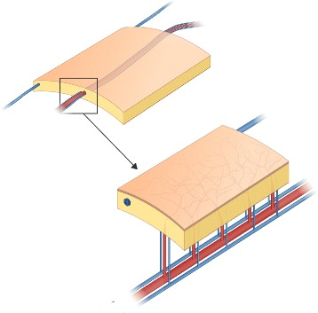
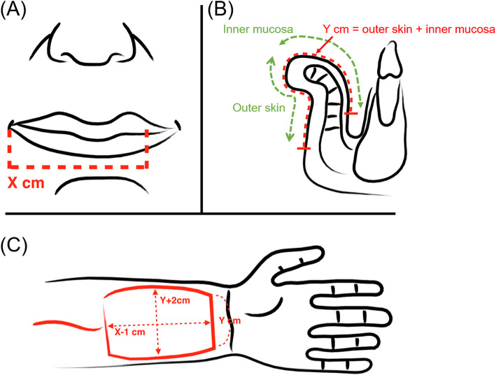

前腕の親指側（橈側＝とうそく）の皮膚を、橈骨動脈（とうこつどうみゃく＝前腕を手首へ走る太い動脈）ごと切り離して体の別の場所へ移す「橈側前腕皮弁（とうそくぜんわんひべん）」を報告した論文です。中国で生まれたことから欧米では「中国皮弁（チャイニーズフラップ）」と呼ばれるようになったとされ、薄くしなやかで血管の茎（けい）が長いという特徴から、口の中や顔の再建をはじめ、遊離皮弁（顕微鏡下で血管を縫い直して移す皮弁）の代表格として世界中に広まりました。マイクロサージャリー（顕微鏡下の血管吻合）の時代を切りひらいた礎（いしずえ）のひとつとされます。
背景 ― 薄くてしなやかな皮膚をどこから採るか
口の中（口腔）や顔、手などの再建では、欠損を覆う皮膚に「薄くてしなやかであること」が求められます。厚く脂肪の多い皮膚を口の中に移すと、かさばって舌の動きや発音・嚥下（えんげ＝飲み込むこと）を妨げてしまうためです。
1970年代後半から、皮膚を血管ごと切り離し、顕微鏡下で移植先の血管に縫い直す遊離皮弁の手術が始まりました。しかし当初の皮弁は、厚みがある・血管の茎（皮弁へ血液を送る血管の幹）が短い・血管の太さや位置が一定しないといった弱点を抱えており、薄く・血管が太くて長く・解剖が安定した皮弁が求められていました。
この論文がしたこと
著者らは、前腕の橈側（親指側）の皮膚を、橈骨動脈とその伴走静脈（ばんそうじょうみゃく＝動脈に寄り添って走る静脈）を茎として切り離し、遊離皮弁として体の別の場所へ移植する術式を報告しました。
PubMed に登録されている本論文の表題は「Forearm free skin flap transplantation: a report of 56 cases（前腕遊離皮弁移植：56例の報告）」であり、少数の試みではなく、まとまった症例数の経験としてこの術式が報告されたことが分かります。
この報告は中華医学雑誌（National Medical Journal of China）に中国語で発表されました。のちに英語圏で高く評価され、1997年には British Journal of Plastic Surgery 誌が「Seminal Article（画期的論文）」として英訳を再掲しています。本ページのリンク先はこの英訳再掲版の記録です。
解剖と手技の要点
この皮弁が信頼できる理由は、橈骨動脈の解剖が安定していることにあるとされます。橈骨動脈は前腕の親指側を手首へ向かって走り、とくに前腕の下（手首寄り）では皮膚のすぐ下を通るため、確実に見つけて採取しやすい血管です。
橈骨動脈からは中隔皮枝（ちゅうかくひし＝筋肉と筋肉のあいだの隔壁を通って皮膚へ立ち上がる細い枝、septocutaneous perforator）が出て、前腕の皮膚を養っています。この枝を含めて皮膚を採ることで、前腕の薄い皮膚が血流を保ったまま「筋膜皮弁（きんまくひべん＝皮膚・皮下脂肪・筋膜をひとかたまりに含む皮弁）」として挙上できるとされます。
静脈（血液の帰り道）は二重に用意されている点も特徴です。深いところには橈骨動脈に寄り添う伴走静脈が2本あり、浅いところには橈側皮静脈（とうそくひじょうみゃく＝cephalic vein、前腕の皮下を走る太い静脈）が走っています。どちらを使うか、あるいは両方を使うかは現在も議論があるとされます。
なお、橈骨動脈は手を養う2本の動脈のうちの1本です。そのため現在では、皮弁を採っても手の血流が保たれるかを術前に Allen テスト（アレンテスト＝手首の2本の動脈を圧迫して手の色の戻りを見る簡単な検査）などで確認するのが一般的とされます。また、皮膚を採ったあとの前腕（採取部）は縫い縮められないことが多く、植皮（別の場所から薄い皮膚を移植すること）を要する点が代償として知られています。

結果 ― 抄録がないため分かること・分からないこと
本論文の PubMed 記録（1997年の英訳再掲版）には抄録（要約）が付いておらず、生着率・合併症・追跡期間といった成績の詳細は、この記録からは確認できません。ここでは確実に裏づけの取れることだけを記します。
表題に「a report of 56 cases（56例の報告）」と明示されていることから、56例の経験にもとづく報告であることが分かります。また PubMed の索引語には「Surgical Flaps / blood supply（皮弁・血行）」「Surgical Flaps / methods（皮弁・術式）」が付されており、皮弁の血行と手技を扱った論文と位置づけられています。
具体的な成績の数値については、原著（中国語）または英訳再掲版の本文を直接確認する必要があります。
意義 ― なぜ「中国皮弁」が世界を変えたのか
橈側前腕皮弁は、それまでの皮弁の弱点をまとめて解決した点で画期的でした。前腕の皮膚は薄くしなやかで、血管の茎は太くて長く、しかも解剖が安定している ― この三拍子がそろったことで、顕微鏡下の血管吻合（けっかんふんごう＝血管を縫いつなぐこと）が格段に確実になったとされます。
とくに口腔・咽頭（いんとう＝のど）や顔面の再建では、薄さがそのまま機能（話す・飲み込む）の良さに直結します。長い血管の茎は、首の血管まで余裕をもって届くことを意味し、移植先の血管を選びやすくします。こうした利点から、本皮弁は頭頸部（とうけいぶ）再建の標準的な選択肢のひとつとして定着していきました。
この皮弁が中国で生まれ、欧米へ紹介されたことから「中国皮弁（Chinese flap）」の通称が生まれたとされます。1980年代以降、この術式は世界の形成外科へ急速に広まり、その後に続く数多くの穿通枝皮弁（せんつうしひべん＝細い枝1本を頼りに皮膚を挙げる皮弁）の考え方にも道をひらいた、マイクロサージャリー史上の礎のひとつと評価されています。
現在でも本皮弁は、口唇（こうしん＝くちびる）・舌・口腔底の再建や、指・手の再建など幅広い場面で用いられ、原著から40年以上を経てなお現役の術式であり続けています。

この論文の要点
- 前腕の橈側（親指側）の皮膚を、橈骨動脈とその伴走静脈を茎として切り離し、遊離皮弁として移植する術式を報告した。
- 表題に「56例の報告」と明示されており、まとまった症例数の経験にもとづく報告である（PubMed 記録に抄録がないため、生着率などの詳細は確認できない）。
- 薄くしなやかな皮膚・太くて長い血管の茎・安定した解剖という三拍子がそろい、顕微鏡下の血管吻合を格段に確実にしたとされる。
- 中国で生まれ欧米へ紹介されたことから「中国皮弁（Chinese flap）」と通称されるようになったとされる。
- 口腔・頭頸部再建の標準的選択肢として定着し、1997年には British Journal of Plastic Surgery が「Seminal Article」として英訳を再掲した。
用語ミニ辞典
- 橈側前腕皮弁
- 前腕の親指側（橈側）の皮膚を、橈骨動脈を茎として採取する皮弁。薄くしなやかで血管の茎が長い。「中国皮弁」とも呼ばれる。
- 橈骨動脈
- 前腕の親指側を手首へ向かって走る動脈。手首では皮膚のすぐ下を通り、脈を触れる場所として知られる。手を養う2本の動脈のうちの1本。
- 遊離皮弁
- 皮膚を血管ごと完全に切り離し、移植先で顕微鏡下に別の血管へ縫い直す皮弁。離れた部位へ組織を運べる。
- 筋膜皮弁（fasciocutaneous flap）
- 皮膚・皮下脂肪・筋膜をひとかたまりとして含む皮弁。筋膜の層にある血管網ごと採ることで血流が保たれる。
- 中隔皮枝（septocutaneous perforator）
- 筋肉と筋肉のあいだの隔壁（中隔）を通って皮膚へ立ち上がる細い動脈の枝。橈側前腕皮弁ではこの枝が皮膚を養う。
- 伴走静脈（venae comitantes）
- 動脈に寄り添って走る細い静脈。橈骨動脈には2本の伴走静脈があり、皮弁の深部の血液の帰り道となる。
- 橈側皮静脈（cephalic vein）
- 前腕の皮下（浅い層）を走る太い静脈。伴走静脈とは別の、もうひとつの血液の帰り道として使える。
- 血管吻合（けっかんふんごう）
- 血管どうしを顕微鏡下で縫いつなぐこと。遊離皮弁ではこの操作の成否が皮弁の生着を左右する。
- Allen テスト
- 手首の2本の動脈（橈骨動脈・尺骨動脈）を圧迫し、手の色の戻り方を見る簡単な検査。橈骨動脈を採っても手の血流が保たれるかを術前に確認する目的で行われる。
本ページは形成外科の学習・参照を目的とした編集部によるオリジナルの日本語解説で、原著（英語）の逐語訳・全文転載ではありません。正確な内容・数値・図は必ず上記リンク先の原著をご確認ください。
掲載している図は、原著の図ではありません。原著の図は出版社が著作権を持ち転載できないため、同じ術式・同じ解剖を扱った無料公開（オープンアクセス／CC BY）論文の図を、出典とライセンスを明記して引用しています。